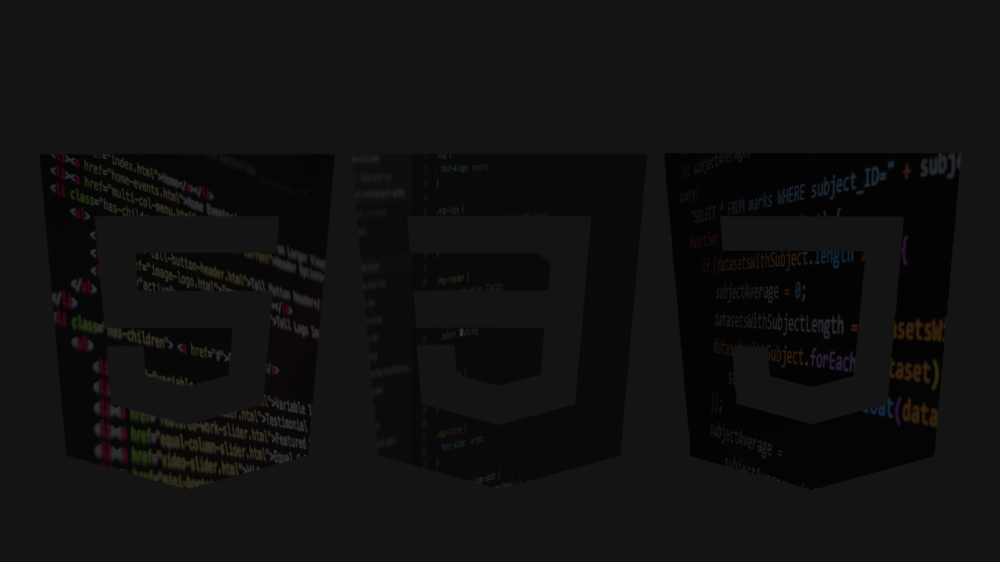

Instituto Departamental de Oriente
Tema: Introducción al Diseño Web
Maestra:Enlly Nolasco
Integrantes:
Hector Samir
Josue Yareth
Aharon Bradley
Maria Ardon
Fecha;03/02/2025
Grupo:2#
Introducción
El diseño gráfico es una disciplina que combina imágenes, texto,
y otros elementos visuales para transmitir un mensaje.
Se aplica en diversos ámbitos, como el marketing, la comunicación
corporativa, el diseño de páginas web, y más.
Definicion:
El desarrollo web es el proceso de crear y mantener sitios web y
aplicaciones web. Implica una combinación de diseño, programación
y otras habilidades para construir experiencias en línea funcionales
y atractivas.
Tipos de desarrollo web:
1)Desarrollo Front-end (Desarrollo del lado del cliente)
b)Desarrollo Back-end (Desarrollo del lado del servidor)
c)Desarrollo Full-stack(Ambas Areas)
Historia Y Evolucion
La evolución del diseño web ha sido un viaje fascinante,
marcado por hitos tecnológicos y cambios en las expectativas
de los usuarios.:
a)Los inicios (1989-1995)
b)La era de las tablas (1995-1998)
c)La llegada de CSS (1998-2003)
d)La era del diseño responsivo (2003-presente)
Importancia De El Diseño Web En La Actualidad
En la actualidad, el diseño web es una pieza fundamental para cualquier
presencia en línea, ya sea para empresas, organizaciones o individuos.
Su importancia radica en varios aspectos clave:
1)Primera impresión y credibilidad
2)Experiencia del usuario (UX)
3)Adaptabilidad a dispositivos móviles (Responsive Design)
Roles y responsabilidades en un equipo de diseño web
En un equipo de diseño web, cada miembro desempeña un papel
crucial para asegurar la creación de sitios web atractivos, funcionales
y que cumplan con los objetivos del cliente. Los roles y responsabilidades
pueden variar según el tamaño
del equipo y la complejidad del
proyecto, pero aquí te presento los más comunes:
1)Director de Proyecto (Project Manager)
2)Diseñador UX/UI (Experiencia de usuario/Interfaz de usuario)
3)Diseñador Web (Web Designer/Maquetador):
Gracias por ver
